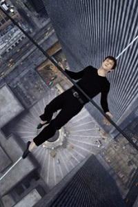
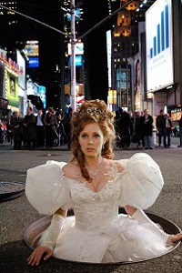
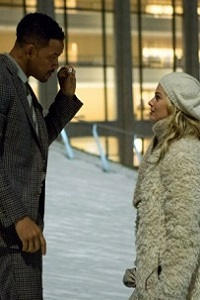
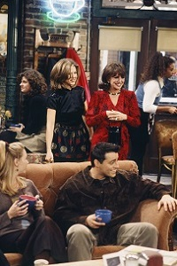
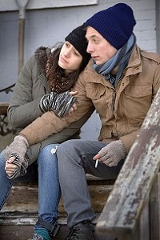
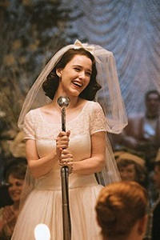
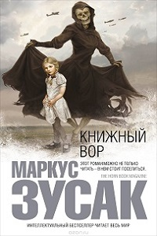
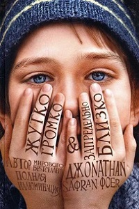
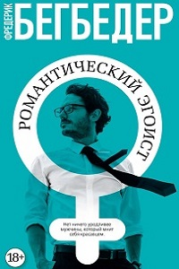
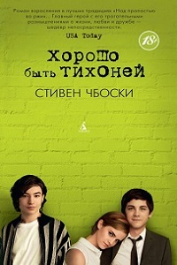

| День рождения: | ---------- |
| Город: | -------- |
| Моб. телефон: | ----------- |
| E-mail: | ----------- |
| Образование: | ---------- |
Стиль шрифта:
Стиль фона:
Цвет фона №1:
Цвет фона №2:
Цвет меню:
Рамка:
Ширина рамки:
Цвет рамки:
Любимые фильмы:
Любимые сериалы:
Любимые книги:
Предложение
Главная героиня фильма – ответственная начальница, которой грозит высылка в Канаду. Ради того,
чтобы избежать ссылки в край озер, героиня готова на все – даже фиктивно выскочить замуж за
своего молодого ассистента.
Прогулка

Вы боитесь высоты? А можете представить себя идущим по натянутому канату на высоте более 400м
без всякой страховки? История о том, как канатоходец Филипп Пети отважился совершить легендарный
трюк - пройти без страховки по канату, натянутому между небоскребами в Нью-Йорке.
Зачарованная

Юная девушка из мультипликационного мира влюбилась в прекрасного принца, чем немало разозлила
его мачеху. С помощью черной магии королева отправляет несчастную в единственное место во
Вселенной, где нет любви — современный Манхэттен.
Фокус

История об опытном мошеннике, который влюбляется в девушку, делающую первые шаги на поприще
нелегального отъема средств у граждан. Отношения становятся для них проблемой, когда
обнаруживается, что романтика мешает их нечестному бизнесу.
Эта дурацкая любовь
У Кола Уивера не жизнь, а мечта. Но когда он узнает, что жена изменила ему и хочет развода, его
жизнь быстро рушится. Кол, который уже пару десятилетий не ходил на свидания, являет собой
настоящего «лоха». Проводя все свое свободное время в баре в дурном расположении духа,
несчастный Кол становится протеже обаятельного Джейкоба Палмера...
Друзья

Главные герои - шестеро друзей - Рейчел, Моника, Фиби, Джоуи, Чендлер и Росс. Три девушки и три
парня, которые дружат, живут по соседству, вместе убивают время и противостоят жестокой
реальности, делятся своими секретами и иногда очень сильно влюбляются.
Бесстыжие

Американский ремейк британского сериала, повествующий о взбалмошной многодетной семье Галлахеров
и их соседях, которые веселятся, попадают в самые невероятные ситуации и пытаются выжить в этом
мире всеми возможными средствами, но при этом как можно меньше работая.
Форс-мажоры
Юрист-самоучка Майк Росс, выдающий себя за выпускника Гарварда, попадает на собеседование к
лучшему адвокату Харви Спектру. Устав от скучных соискателей, Харви нанимает Майка: у парня
врожденный талант. Так рождается один из самых неоднозначных, но, в то же время, и самых
блестящих тандемов законников на Манхэттене.
Удивительная миссис Мейзел

Действие разворачивается в Нью-Йорке 1958 года. В основе сюжета лежит история «примерной
домохозяйки» Мириам Майзел, которая внезапно обнаруживает у себя скрытый талант к стендапу.
Скандал

Специалист по связям с общественностью Оливия Поуп, ранее работавшая на президента США, создает
свое антикризисное агентство, цель которого - устранять проблемы высокопоставленных клиентов до
того, как они станут всеобщим достоянием
Книжный вор

Январь 1939 года. Германия. Страна, затаившая дыхание. Никогда еще у смерти не было столько
работы. «Книжный вор» — недлинная история, в которой говорится: об одной девочке; о разных
словах; об аккордеонисте; о разных фанатичных немцах; о еврейском драчуне; и о множестве краж.
Это книга о силе слов и способности книг вскармливать душу.
Жутко громко и запредельно близко

Роман Джонатана Сафрана Фоера, увидевший свет в 2005 году. Главный герой книги - девятилетний
мальчик по имени Оскар Шелл, нашедший ключ в вазе, принадлежавшей его погибшему отцу.
Вдохновленный этой находкой, Оскар начинает искать какую-либо информацию об этом ключе по всему
Нью-Йорку.
Романтический эгоист

Романтический эгоист - это "Лего из Эго": под маской героя то исповедуется сам автор, то
наговаривает на себя выдуманный писатель, пресыщенный славой. Детали головоломки мелькают
вперемешку с остроумными оценками нашей эпохи и ее героев на фоне смутного осознания
надвигающегося краха.
Клуб бездомных мечтателей

Трогательный роман взросления. Повествование идет от первого лица, в виде записок в дневнике,
которые предназначены "Дорогому Другу". Его герой не знает, но все же доверяет ему.
Главный герой является тихоней, на что повлияли те нелегкие обстоятельства, из-за чего у героя
была депрессия. Но с появлением новых друзей его жизнь меняется.